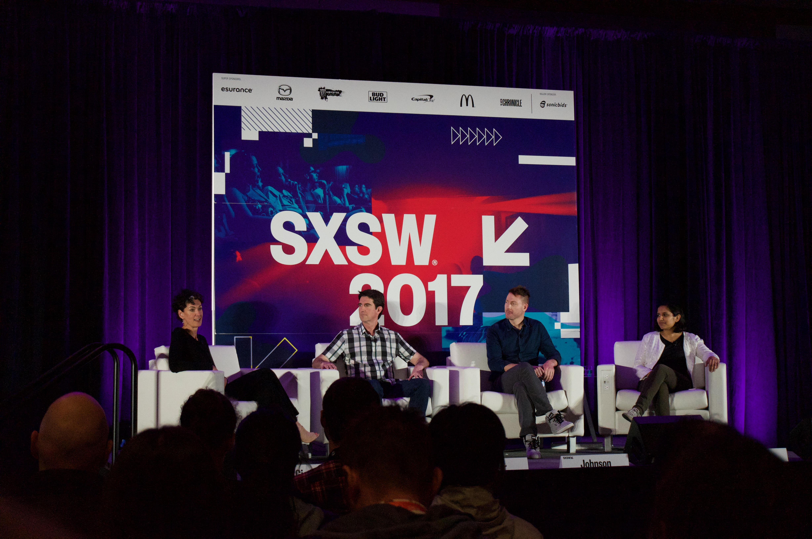
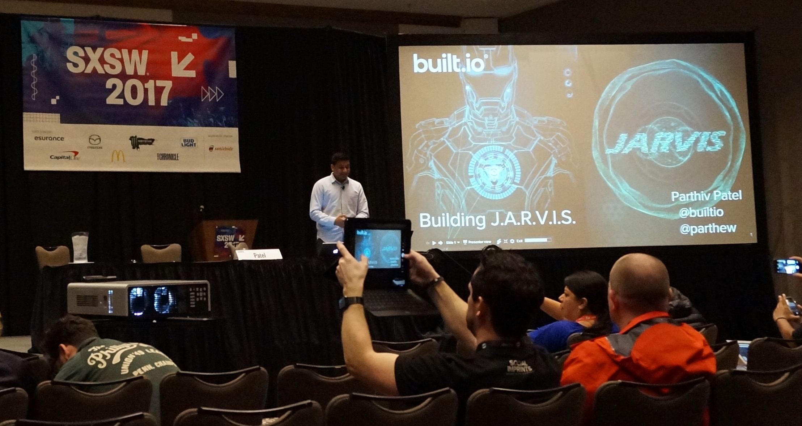
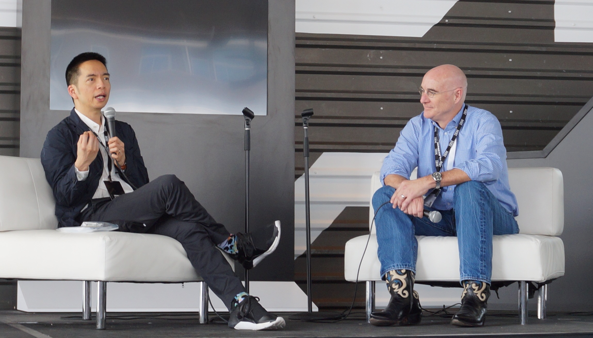

I was lucky to attend South by Southwest 2017 thanks to The Cocktail (my current employer), a digital products consultancy in Spain. I had an idea that it was a big thing, but no idea how many people attended and the vision of the future that it would give me. So here is a summary of what I learned and the main topics from the sessions I attended, seen form a UX Designer perspective.

SXSW 2017 -What’s the Future of IntelligenceFirst some tips
Buy your ticket early and avoid queues
If you get early company approval to go, get your ticket as early as possible, enjoy an early bird discount and get a “Platinum” badge and save time getting preferred access for sessions and entertainment that goes on afterwards.
Housing: find a place near the conference venues
Wether you pick a five star hotel or an AirBnb shared room, be sure its close by to the conference venues, you will enjoy those extra minutes when trying to arrive early for your first session, going for change of clothes or a quick bath before a party or just walking home at night at the end of a long day. They go fast so be sure to make arrangements.
Leave your laptop and put in some extra clothes
Don’t take your laptop for notes, your battery won’t last a full day and you’ll be carrying the weight all day (and maybe night) while looking for power outlets. You will be sitting in small chairs crashing elbows with everyone. I recommend to use pen and paper (or an iPad) and take lots of pictures.
Also, the weather in Austin is usually hot, but it can get colder at night, so be prepared and put a jacket in you backpack.
Now the “tech” stuff…

SXSW 2017 - Building J.A.R.V.I.S. - Built.io SXSW 2017 PresentationArtificial Intelligence
The main subject of the event was AI, around 60% of the sessions were about AI or had some direct relation with it. What I learned:
It’s not about tech, Its about the story
The guys at Disney talked about how they embraced Artificial Intelligence, but the say is at the service of the story, and it should be invisible, it’s success measured by the greatness of the story. This resonates with me, AI seen as a tool should be used only when it makes sense.
The hard part is conversation management
Natural language processing has come a long way, but is still struggling with handling conversations. Conversation Analysis as discipline is key to get the UX right in our digital products that have Artificial Intelligence at their core. Applying the principles of conversation design: Recipient Design, Minimisation, Repair.
Skills, Skills, Skills
Siri, Cortana, Alexa, and other personal assistants will be everywhere, but they will be as powerful as the abilities they have to really be useful to users. Those capabilities will be in form of skills programmed by products and services able to “talk” to those personal assistants and give the best solutions to you based on what they know of you. At the moment of writing, Alexa has over 10,000 skills available giving you the power to give recipes for a cupcake, control the lights or play smoothing sounds to help sleep. The challenge will be to be ready to communicate with that tech, and become the preferred option depending on the user.
Resources on Artificial Intelligence:

John Maeda presents his design in tech reportProduct Design
As a UX Designer my job involves building digital products and - as John Maeda points out is his Design in Tech Report - Computational Designers are the ones that will have bigger impact in the world in the coming years. So here are the key learnings for building products:
Designing for humans and robots
Everyday we make decisions that affect the experience we provide to humans - improving for SEO, for personal assistants tech, and other systems - for those products to perform better, which doesn’t seem new but I never thought of it as making them better for “robots” and is something we will continue doing in the future.
Data is the new black
We have learned the importance of data over the years, and have developed different methodologies around it. Data driven, data informed design and more recently CRO (conversion rate optimisation) as ways to develop a framework around the data that we collect from users to improve their experience. As big as data has become in our daily process it has t be partnered with talking to our users and take into account what they tell us (explicit data) and what we know from how they behave (implicit data).
You have to tell a good story
With all the robots in the room we can’t forget about our flesh and bone friends, and the best way to communicate with other humans is by telling a good story. In digital products we have to understand who our main characters are, who or what plays supporting roles and the best way to apply the core elements of dramaturgy: structure, rhythm, flow, even individual word choices.
In her Keynote, Anna Dahlstrom gave us a great technic to better understand the pieces that make our products using visual mapping of our prototypes. Laying them out on the wall so we can better understand how they fit together and if they can work by themselves if a user doesn’t follow the usual path, our new landing page is …google, Instagram, etc.
Resources on Product Design:
Trends
There was lots about the future and the one that got me the most was hacking our brains to learn faster. But since that is a bit scary a further in the future i’ll leave you with what i think is coming now:
Move faster…in the right direction
With Agile, Lean, Design Sprints, everyone is trying to move faster, but big corporations are also worried to go in the right direction. Big companies like Citi are trying new concepts like ‘Fintegration’ (check out Yolande Piazza explaining their strategy) trying to partner with smaller companies that allow them to innovate faster.
We know that our clients need our advice, the key is to understand what they need advice with…” Yolande Piazza.
A new - augmented - reality
I’m not a big fan or VR but I can definitively can see it coming, and judging by the amount of companies demoing products and investing big in these technologies is a matter of time to see it play a bigger role in our lives.
Resources on Future Trends:
Closing thoughts
SXSW was an amazing experience, if you have the chance to attend don’t give it a second thought and get on a plane to meet incredible people (I see you friends!) and get a glimpse of the future. If you are lucky you will be inspired to build something that plays a big role in that future.
Ps: I also got to see great bands during the week. If you haven’t heard them i recommend that you do: The drums , Hippo Campus , Poliça , Sylvan Esso , Tokyo Ska Paradise Orchestra